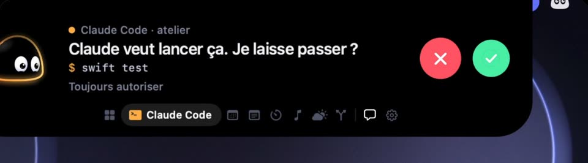

Il suit Claude Code.
Chaque session, dans chaque terminal et éditeur, apparaît dans la notch : elle réfléchit, travaille, a fini ou a échoué. Quand Claude Code demande une permission, l'île s'ouvre et tu réponds de là, sans changer de fenêtre. Sans réponse, la question repart dans Claude Code.